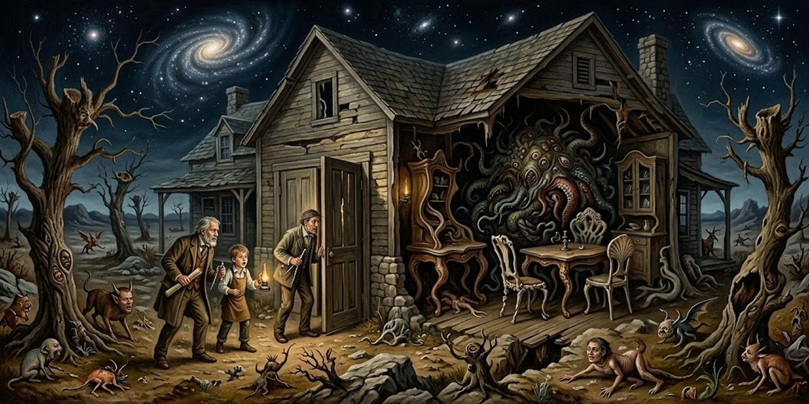
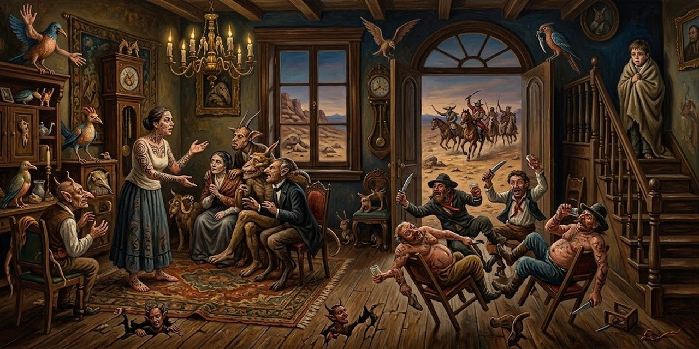
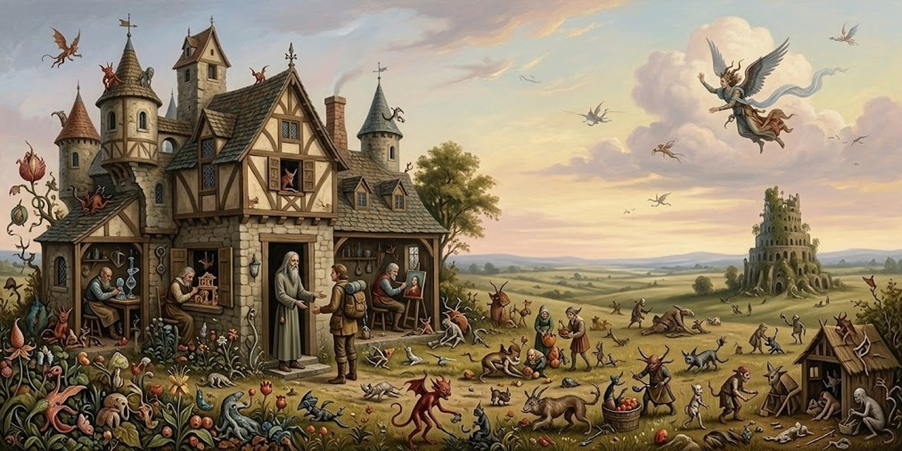
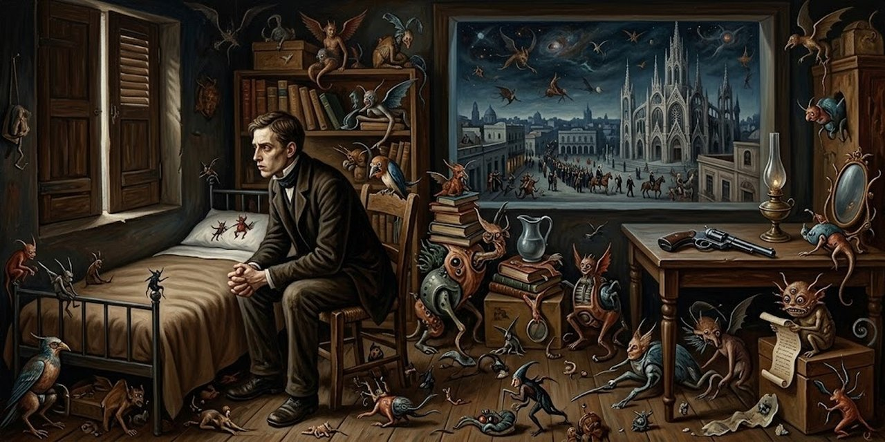
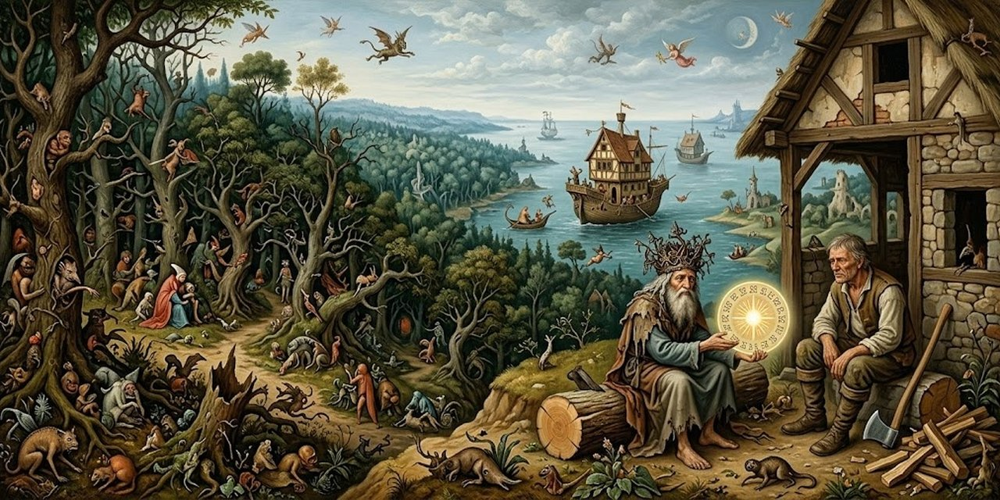

12 de octubre de 2026
El Libro de Arena: trece cuentos

Jorge Luis Borges
En 1975, Jorge Luis Borges publicó El Libro de Arena, trece cuentos que el autor prefiere presentar con un epílogo en lugar de un prólogo, porque prologar cuentos todavía no leídos es tarea casi imposible. Un viejo y un muchacho que son el mismo hombre conversan en un banco junto a un río, un congreso crece hasta confundirse con el cosmos y la suma de los días, una utopía cansa al hombre que la imagina y un libro de páginas infinitas se vuelve un objeto de pesadilla para quien lo posee.
1. El Otro

El hecho ocurrió en el mes de febrero de 1969, al norte de Boston, en Cambridge. No lo escribí inmediatamente porque mi primer propósito fue olvidarlo, para no perder la razón. Ahora, en 1972, pienso que si lo escribo, los otros lo leerán como un cuento y, con los años, lo será tal vez para mí. Sé que fue casi atroz mientras duró y más aún durante las desveladas noches que lo siguieron.
Borges escribe esto en 1972 y jura que le pasó de verdad en febrero de 1969, en Cambridge, una ciudad junto a Boston. Atroz quiere decir espantoso; desvelada es la noche que se pasa sin dormir. Desde la primera línea avisa que lo cuenta como cuento para no perder la razón.
Son las diez de la mañana y Borges está recostado en un banco frente al río Charles. El agua gris arrastra pedazos de hielo y, como pasa siempre que se mira un río, lo pone a pensar en el tiempo. No hay un alma a la vista, hasta que alguien se sienta en la otra punta del banco y se pone a silbar una milonga criolla que lo devuelve a un patio de su juventud, ya desaparecido, y a un amigo ya muerto. Después el desconocido empieza a decir los versos en voz alta.
La voz no era la de Álvaro, pero quería parecerse a la de Álvaro. La reconocí con horror. Me le acerqué y le dije: —Señor, ¿usted es oriental o argentino? —Argentino, pero desde el catorce vivo en Ginebra —fue la contestación. Hubo un silencio largo. Le pregunté: —¿En el número diecisiete de Malagnou, frente a la iglesia rusa? Me contestó que sí.
Álvaro Melián Lafinur era aquel amigo de la juventud de Borges: la voz se le parece y reconocerla le da horror, porque en el fondo es su propia voz. Oriental quiere decir uruguayo, y el catorce es 1914: el desconocido vive en Ginebra desde 1914, en la calle Malagnou, la misma dirección donde Borges vivió de muchacho con su familia.
El mayor le dice entonces quién es: los dos se llaman Jorge Luis Borges y están en Cambridge, en 1969. El muchacho no lo acepta: para él el banco está en Ginebra, a unos pasos del Ródano. Lo único raro que concede es el parecido, aunque el otro tenga la cabeza gris. El mayor le ofrece una prueba.
Yo le contesté: —Puedo probarte que no miento. Voy a decirte cosas que no puede saber un desconocido. En casa hay un mate de plata con un pie de serpientes, que trajo del Perú nuestro bisabuelo. También hay una palangana de plata, que pendía del arzón. En el armario de tu cuarto hay dos filas de libros.
El arzón es la parte delantera de la silla de montar, donde se cuelgan las cosas. Un mate de plata con pie de serpientes y una palangana que pendía del arzón son objetos de la casa de los Borges que ningún desconocido puede conocer: si el otro sabe eso, es que no es un desconocido. Después le nombra uno por uno los libros del armario y un atardecer en una plaza, y el muchacho solo corrige el nombre de la plaza.
La prueba no le basta: si está soñando, ese señor puede saber todo lo que él sabe, y el catálogo de recuerdos no prueba nada. La objeción es justa y Borges la admite. Si aquello es un sueño, cada uno tiene que creerse el soñador; tal vez dejen de soñar, tal vez no. Lo que queda es aceptar el sueño como se acepta el universo. Entonces el muchacho pregunta con ansiedad qué pasa si el sueño dura.
—¿Y si el sueño durara? —dijo con ansiedad. Para tranquilizarlo y tranquilizarme, fingí un aplomo que ciertamente no sentía. Le dije: —Mi sueño ha durado ya setenta años. Al fin y al cabo, al recordarse, no hay persona que no se encuentre consigo misma. Es lo que nos está pasando ahora, salvo que somos dos.
Aplomo es serenidad, calma. Borges, que tiene setenta años, lo tranquiliza con una broma seria: su sueño lleva setenta años y, al recordarse, cualquiera se encuentra consigo mismo; lo nuevo de esa mañana es que el encuentro es con otro que es él.
El mayor le ofrece entonces lo que nadie puede ofrecer: contarle el porvenir, que para él es pasado.
¿No querés saber algo de mi pasado, que es el porvenir que te espera? Asintió sin una palabra.
Para el viejo es recuerdo y para el joven es futuro: es la misma vida vista desde sus dos orillas. El muchacho asiente sin decir palabra.
Le cuenta que su madre sigue bien, en la casa de Charcas y Maipú, la esquina de Buenos Aires donde vivía la familia; que su padre murió hace años, y su abuela en la misma casa, y que su hermana Norah se casó y tiene dos hijos. Le anuncia otra guerra y un país que se encierra en sí mismo. El muchacho apenas lo escucha: lo amilana el miedo de encontrarse ante lo imposible. Y entonces vacila y pregunta por él.
Vaciló y me dijo: —¿Y usted? —No sé la cifra de los libros que escribirás, pero sé que son demasiados. Escribirás poesías que te darán un agrado no compartido y cuentos de índole fantástica. Darás clases como tu padre y como tantos otros de nuestra sangre.
El muchacho quiere saber qué fue de la vida de ese señor, y la respuesta es la propia biografía de Borges: escribirá poemas y cuentos fantásticos y dará clases, como su padre y como tantos de su familia. Un agrado no compartido es un gusto que no se puede repartir con nadie.
Hablan de literatura, como no podía ser de otro modo. El muchacho lleva entre las manos un libro de Dostoievski y prepara unos versos para cantar la fraternidad de los oprimidos; al viejo esa masa le parece una abstracción, porque solo existen los individuos. Tampoco coinciden en las metáforas: el joven quiere inventar imágenes nuevas y el viejo prefiere las afinidades de siempre, el tiempo y el agua, los sueños y la vida. Entonces al muchacho se le ocurre una dificultad.
De pronto dijo: —Si usted ha sido yo, ¿cómo explicar que haya olvidado su encuentro con un señor de edad que en 1918 le dijo que él también era Borges? No había pensado en esa dificultad. Le respondí sin convicción: —Tal vez el hecho fue tan extraño que traté de olvidarlo. Aventuró una tímida pregunta: —¿Cómo anda su memoria? Comprendí que para un muchacho que no había cumplido veinte años, un hombre de más de setenta era casi un muerto. Le contesté: —Suele parecerse al olvido, pero todavía encuentra lo que le encargan. Estudio anglosajón y no soy el último de la clase.
La objeción es de lógica fina: si el viejo ya fue ese muchacho, tendría que recordar esta misma conversación desde el otro lado, y no la recuerda. Borges sale del paso: tal vez quiso olvidar algo demasiado extraño. Y contesta lo de su memoria con humor: le encuentra la vuelta todavía, aunque ande estudiando anglosajón, el idioma que se hablaba en Inglaterra hace mil años.
La conversación ya duró demasiado para ser la de un sueño. A Borges se le ocurre de golpe una prueba que ningún sueño puede fabricar: un verso.
Nuestra conversación ya había durado demasiado para ser la de un sueño. Una brusca idea se me ocurrió. —Yo te puedo probar inmediatamente —le dije— que no estás soñando conmigo. Oí bien este verso, que no has leído nunca, que yo recuerde. Lentamente entoné la famosa línea: L'hydre — univers tordant son corps écaillé d'astres.

El verso es francés, del poeta Victor Hugo, y dice, más o menos: la hidra-universo, retorciendo su cuerpo escamado de astros. Una hidra es un monstruo de muchas cabezas; Hugo ve el universo como un animal inmenso con escamas de estrellas. La prueba es fina: si el muchacho lo estuviera soñando, el verso saldría de su propia cabeza y no podría sorprenderlo.
Sentí su casi temeroso estupor. Lo repitió en voz baja, saboreando cada resplandeciente palabra. —Es verdad —balbuceó—. Yo no podré nunca escribir una línea como ésa. Hugo nos había unido.
El verso sí lo sorprende: lo repite en voz baja, saboreando cada palabra, y confiesa que él nunca escribiría una línea así. Hugo los había unido, dice Borges: los dos admiran al mismo poeta y por un momento dejan de ser dos extraños.
El muchacho había recitado antes, con fervor, a otro poeta: Walt Whitman, el gran poeta estadounidense del siglo XIX, que cantó la vida y a los hombres comunes. El viejo recuerda una pieza en que Whitman rememora una noche feliz ante el mar, y le da una vuelta.
Antes, él había repetido con fervor, ahora lo recuerdo, aquella breve pieza en que Walt Whitman rememora una compartida noche ante el mar, en que fue realmente feliz. —Si Whitman la ha cantado —observé— es porque la deseaba y no sucedió. El poema gana si adivinamos que es la manifestación de un anhelo, no la historia de un hecho. Se quedó mirándome. —Usted no lo conoce —exclamó—. Whitman es incapaz de mentir.
Borges lee el poema al revés: si Whitman cantó esa noche feliz es porque quiso vivirla y no pudo; un poema vale más como anhelo, como deseo, que como relato de un hecho. El muchacho se rebela: para él Whitman es incapaz de mentir. Los dos aman al mismo poeta y no se entienden sobre él.
Medio siglo no pasa en vano: bajo la charla de libros, el viejo comprende que no pueden entenderse, demasiado distintos y demasiado parecidos, y que discutir es inútil, porque el destino del muchacho es llegar a ser ese hombre. Entonces recuerda una fantasía de Coleridge y busca un artificio parecido: una prueba que cruce de un tiempo al otro.
De pronto recordé una fantasía de Coleridge. Alguien sueña que cruza el paraíso y le dan como prueba una flor. Al despertarse, ahí está la flor. Se me ocurrió un artificio análogo. —Oí —le dije—, ¿tenés algún dinero?
Coleridge es un poeta inglés del siglo XIX. La fantasía es ésa: alguien sueña que cruza el paraíso y le dan una flor de prueba, y al despertar la flor está ahí. Si algo del sueño vuelve con uno a la vigilia, el sueño fue más que un sueño. Por eso Borges le pide dinero: un intercambio que atraviese los dos tiempos.
El muchacho saca tres escudos de plata y unas piezas menores y le ofrece una moneda; Borges le tiende a cambio uno de esos billetes americanos que tienen muy diverso valor y el mismo tamaño. El joven lo examina con avidez y grita que no puede ser: el billete lleva la fecha de 1974, cinco años después de aquel banco. Meses después le dirán al narrador que los billetes de banco no llevan fecha. Para el muchacho es un milagro, y lo milagroso da miedo: hace pedazos el billete y guarda la moneda. El viejo piensa tirarla al río; la moneda de plata perdiéndose en el río de plata habría cerrado la historia con una imagen viva, pero la suerte no lo quiere.
Respondí que lo sobrenatural, si ocurre dos veces, deja de ser aterrador. Le propuse que nos viéramos al día siguiente, en ese mismo banco que está en dos tiempos y en dos sitios. Asintió en el acto y me dijo, sin mirar el reloj, que se le había hecho tarde. Los dos mentíamos y cada cual sabía que su interlocutor estaba mintiendo. Le dije que iban a venir a buscarme.
Los dos quedan en verse al día siguiente y los dos saben que no irán: la despedida es una mentira cortés de los dos lados. El banco está en dos tiempos y en dos sitios porque para uno es Cambridge en 1969 y para el otro es Ginebra en 1918.
¿A buscarlo?, se sorprende el muchacho. Sí, le explica el viejo: cuando tenga su edad habrá perdido casi toda la vista y le quedarán el amarillo, las sombras y las luces, y la ceguera que llega despacio no es una tragedia, es como un lento atardecer de verano. Se despiden sin tocarse. Al día siguiente Borges no vuelve al banco y supone que el otro tampoco fue. Después, durante años, le da vueltas al encuentro.
He cavilado mucho sobre este encuentro, que no he contado a nadie. Creo haber descubierto la clave. El encuentro fue real, pero el otro conversó conmigo en un sueño y fue así que pudo olvidarme; yo conversé con él en la vigilia y todavía me atormenta el recuerdo. El otro me soñó, pero no me soñó rigurosamente. Soñó, ahora lo entiendo, la imposible fecha en el dólar.
Cavilar es pensar mucho, darle vueltas a una cosa. La clave que encuentra Borges cierra el cuento: el muchacho lo soñó y por eso pudo olvidarlo, y soñó también la fecha imposible del dólar; él lo vivió despierto y por eso el recuerdo todavía lo atormenta.
2. Ulrica

Javier Otárola, profesor colombiano, cuenta su encuentro con Ulrica: una noche y una mañana en la ciudad de York. Se conocen en la salita del Northern Inn, donde ella rehúsa una copa y dice que es feminista. Alguien comenta que no es la primera vez que los noruegos entran en York, y ella responde que Inglaterra fue de ellos y la perdieron, si es que alguien puede tener algo o algo puede perderse. A la mañana siguiente él baja temprano al comedor; ha nevado y los páramos se pierden en la mañana. Ulrica lo invita a su mesa y le dice que le gusta salir a caminar sola.
Recordé una broma de Schopenhauer y contesté: —A mí también. Podemos salir juntos los dos.
Arthur Schopenhauer, filósofo alemán del siglo XIX, escribió que la soledad es la suerte de los espíritus grandes. Ella acaba de decir que le gusta caminar sola; él responde que a él también, y así los dos pueden salir solos, juntos. La broma abre la caminata.
Se alejan de la posada sobre la nieve joven y no hay un alma en los campos. Él propone ir a Thorgate, río abajo, y sabe que ya está enamorado. De pronto, un aullido lejano.
Oí de pronto el lejano aullido de un lobo. No he oído nunca aullar a un lobo, pero sé que era un lobo. Ulrica no se inmutó.
Hace siglos que no quedan lobos en Inglaterra. El aullido llega como una señal del tiempo antiguo, el de las sagas del Norte del que Ulrica viene: ella ni siquiera se sorprende.
Esa tarde los caminos se separan: ella seguirá hacia Londres y él hacia Edimburgo. Ulrica dice que en Oxford Street repetirá los pasos de De Quincey, que buscaba a su Anna perdida entre las muchedumbres de Londres.
—De Quincey —respondí— dejó de buscarla. Yo, a lo largo del tiempo, sigo buscándola. —Tal vez —dijo en voz baja— la has encontrado. Comprendí que una cosa inesperada no me estaba prohibida y le besé la boca y los ojos. Me apartó con suave firmeza y luego declaró: —Seré tuya en la posada de Thorgate. Te pido mientras tanto, que no me toques. Es mejor que así sea.
Thomas De Quincey, escritor inglés del siglo XIX, perdió a una muchacha llamada Anna en Londres y la buscó por años entre la multitud. Javier le dice a Ulrica que él todavía la sigue buscando; ella responde que tal vez ya la ha encontrado y le promete su amor en la posada de Thorgate, con una condición.
Tomados de la mano siguen. Él le dice que todo esto es como un sueño y que él nunca sueña; ella le habla de un rey que no soñó hasta que un hechicero lo hizo dormir en una pocilga, y oye un pájaro antes de que cante: en esas tierras piensan que quien está por morir prevé lo futuro. Él quisiera que la mañana no terminara.
—Yo querría que este momento durara siempre —murmuré. —Siempre es una palabra que no está permitida a los hombres —afirmó Ulrica y, para aminorar el énfasis, me pidió que le repitiera mi nombre, que no había oído bien.
Ulrica niega la palabra siempre: a los hombres solo les toca el instante. Para suavizar lo que ha dicho, le pide otra vez su nombre. Ninguno de los dos consigue pronunciar el del otro (él no puede con Ulrikke, ella con Javier Otárola) y entonces se rebautizan: Sigurd y Brynhild. Él le pregunta si conoce la saga.
—Por supuesto —me dijo—. La trágica historia que los alemanes echaron a perder con sus tardíos Nibelungos. No quise discutir y le respondí: —Brynhild, caminas como si quisieras que entre los dos hubiera una espada en el lecho.
La saga de los Völsungas, islandesa, cuenta el amor trágico de Sigurd y Brynhild, que durmieron con la espada Gram desenvainada entre los dos: es el verso que abre este cuento. El Cantar de los Nibelungos es la versión alemana, más tardía. Ulrica defiende la suya.
Están de golpe ante la posada, que se llama, como la otra, Northern Inn. Arriba, en el cuarto oscuro, ella lo llama por su verdadero nombre, Javier. Ya no quedan muebles ni espejos, ni una espada entre los dos. El tiempo se va como la arena, y él posee, por primera y última vez, la imagen de Ulrica.
3. El Congreso

Alejandro Ferri escribe ya viejo, solo en un hotel de Buenos Aires: llegó de Santa Fe en 1899, fue periodista y nunca se casó. Días atrás supo que Fermín Eguren, su antiguo rival, murió en Punta del Este.
La muerte de aquel hombre, que ciertamente no fue nunca mi amigo, se ha obstinado en entristecerme. Sé que estoy solo; soy en la tierra el único guardián de aquel acontecimiento, el Congreso, cuya memoria no podré compartir. Soy ahora el último congresal. Es verdad que todos los hombres lo son, que no hay un ser en el planeta que no lo sea, pero yo lo soy de otro modo. Sé que lo soy; eso me hace diverso de mis innumerables colegas, actuales y futuros.
Fermín Eguren no fue nunca su amigo, pero su muerte lo deja solo con la historia que va a contar. Todos los hombres son congresales sin saberlo, dice Ferri; él es el último que lo sabe.
Los sábados, en la Confitería del Gas, unas quince o veinte personas rodeaban una mesa larga, presididas por don Alejandro Glencoe, un estanciero oriental de barba rojiza que había resuelto fundar un Congreso del Mundo, con representantes de todos los hombres de todas las naciones. Ferri entró de la mano de su amigo, el poeta Fernández Irala. El rojizo Twirl, adulador sutil, iba ensanchando el proyecto sin fin: una biblioteca, una sede, un idioma universal. Eguren, sobrino de don Alejandro, despreciaba a Ferri desde el primer día. Una noche, a la salida de una casa de la calle Junín, Eguren, algo bebido, empujó a un hombre grandote, que les cerró el paso con un cuchillo. Eguren se echó atrás, aterrado.
Yo no las tenía todas conmigo, pero mi odio pudo más que mi susto. Me llevé la mano a la sisa, como para sacar un arma, y dije con voz firme: —Esto lo vamos a arreglar en la calle. El desconocido me respondió, ya con otra voz: —Así me gustan los hombres. Yo quería probarlos, amigo. Ahora reía afablemente. —Lo de amigo corre por cuenta suya —le repliqué y salimos.
El cuchillero solo quería probarlos, y Ferri, que se tenía por cobarde, respondió firme. Irala lo palmearía después: entre los tres había un mosquetero. Eguren nunca le perdonó haber sido testigo de su aflojada.
Don Alejandro convidó a Ferri y a Irala a pasar unos días en La Caledonia, su estancia junto al Brasil, donde los peones albañiles levantaban un anfiteatro para el acto de apertura. En Buenos Aires, Glencoe era un señor afable y medido; en La Caledonia, el severo jefe de un clan, que los domingos leía la Sagrada Escritura a los gauchos. Una noche, un agregado y un peón se trabaron a puñaladas.
Llegó a la rueda, se quitó el arma que solía cargar, se la dio al capataz, que me pareció acobardado, y se abrió camino entre los aceros. Oí en seguida la orden: —Suelten el cuchillo, muchachos. Con la misma voz tranquila agregó: —Ahora se dan la mano y se portan bien. No quiero barullos aquí. Los dos obedecieron.
Sin su arma y sin apuro, don Alejandro se abre camino entre los aceros y manda soltar el cuchillo y darse la mano. Al otro día despide al capataz, que se había acobardado. Ferri siente que la soledad lo cerca y teme no volver nunca a Buenos Aires.
El Congreso necesitaba un idioma, y dos delegados irían a documentarse a Londres y a París: Eguren y Ferri. En Londres, Ferri estudia las lenguas universales en la biblioteca del Museo Británico, y bajo su alta cúpula conoce a Beatriz Frost, una muchacha alta, de cabellera bermeja, devota de la fe predicada por Ibsen: no quiere atarse a nadie.
De su boca nació la palabra que yo no me atrevía a decir. Oh noches, oh compartida y tibia tiniebla, oh el amor que fluye en la sombra como un río secreto, oh aquel momento de la dicha en que cada uno es los dos, oh la inocencia y el candor de la dicha, oh la unión en la que nos perdíamos para perdernos luego en el sueño, oh las primeras claridades del día y yo contemplándola.
La palabra que él no se atrevía a decir es amor. Lo que sigue es un solo aliento: las noches con Beatriz, que Ferri recordará toda la vida. Al cabo del año vuelve a Buenos Aires; por cobardía no le deja su dirección, para eludir la angustia de esperar cartas.
Mientras tanto, Twirl ha propuesto comprar sin orden colecciones enteras de diarios: todo es un testimonio, dice, y los paquetes se apilan ya sin catálogo en el caserón de don Alejandro. La obra del anfiteatro está detenida. El viernes, Ferri va a entregar su informe a la casa de la calle Alsina. Ahí están Nora Erfjord, la secretaria, Nierenstein, Cruz, Wren. Bruscamente oyen los pasos: don Alejandro llega con otra voz.
Sin mirar a nadie, mandó: —Vayan sacando todo lo amontonado ahí abajo. Que no quede un libro en el sótano.
Sacan los libros al patio y amontonan una pila más alta que los más altos. Después viene la orden de prenderles fuego. Nierenstein murmura que el Congreso del Mundo no puede prescindir de esos auxiliares preciosos que seleccionó con tanto amor.
—¿El Congreso del Mundo? —dijo don Alejandro. Se rió con sorna y yo nunca lo había oído reír.
Es la primera vez que lo oyen reír. Entonces llega la revelación: cuatro años tardó don Alejandro en comprender que la empresa es tan vasta que abarca el mundo entero; el Congreso no es unos cuantos charlatanes en una estancia perdida: comenzó con el primer instante del mundo y proseguirá cuando sean polvo. Es los libros que han quemado, es Job en el muladar y Cristo en la cruz, es sus toros.
No pude contenerme y lo interrumpí: —Don Alejandro, yo también soy culpable. Yo tenía concluido el informe, que aquí le traigo, y seguía demorándome en Inglaterra y tirando su plata, por el amor de una mujer. Don Alejandro continuó: —Ya me lo suponía, Ferri. El Congreso es mis toros. El Congreso es los toros que he vendido y las leguas de campo que no son mías. Una voz consternada se elevó; era la de Twirl. —¿No va a decirnos que ha vendido La Caledonia? Don Alejandro contestó sin apuro: —Sí, la he vendido.
Ferri se confiesa culpable: tenía el informe listo y seguía en Inglaterra, tirando la plata de don Alejandro por el amor de una mujer. Twirl, consternado, pregunta por La Caledonia: vendida. Ya no le queda un palmo de tierra a don Alejandro, pero su ruina no le duele, porque ahora entiende.
Esa última noche salen todos a mirar el Congreso: en la plaza toman un coche abierto y recorren la ciudad, cansados y felices, hasta los linderos de la aurora. Cerca de un agua oscura y humilde, tal vez el Maldonado o tal vez el Riachuelo, la alta voz de Nora Erfjord entona la balada de Patrick Spens.
Algo de lo que entrevimos perdura —el rojizo paredón de la Recoleta, el amarillo paredón de la cárcel, una pareja de hombres bailando en una esquina sin ochava, un atrio ajedrezado con una verja, las barreras del tren, mi casa, un mercado, la insondable y húmeda noche— pero ninguna de esas cosas fugaces, que acaso fueron otras, importa. Importa haber sentido que nuestro plan, del cual más de una vez nos burlamos, existía realmente y secretamente y era el universo y nosotros. Sin mayor esperanza, he buscado a lo largo de los años el sabor de esa noche; alguna vez creí recuperarla en la música, en el amor, en la incierta memoria, pero no ha vuelto, salvo una sola madrugada, en un sueño.
No importan las imágenes sueltas de la noche: importa haber sentido que el plan, del que más de una vez se burlaron, existía realmente y secretamente y era el universo y ellos. Al amanecer juran no decir nada a nadie. Ferri no vuelve a verlos, salvo a Irala, y nunca comentan lo ocurrido: cualquier palabra hubiera sido una profanación. Don Alejandro muere en 1914. Una vez, ya viejo, Ferri se cruza con Nierenstein en la calle Lima, y los dos fingen no haberse visto.
4. There Are More Things

A punto de rendir el último examen de filosofía en la Universidad de Texas, el narrador sabe que su tío Edwin Arnett ha muerto. El tío, ingeniero jubilado, lo había iniciado en las perplejidades de la filosofía allá en la Casa Colorada, cerca de Lomas: con una naranja le enseñó el idealismo de Berkeley y con el tablero de ajedrez, las paradojas de Zenón.
Sentí lo que sentimos cuando alguien muere: la congoja, ya inútil, de que nada nos hubiera costado haber sido más buenos. El hombre olvida que es un muerto que conversa con muertos.
La congoja de que nada nos hubiera costado ser más buenos: eso sentimos cuando alguien muere. Y sin embargo lo olvidamos: cada hombre es un muerto que conversa con muertos.
Regresado a la patria en 1921, el sobrino averigua que la casa fue rematada para evitar litigios. La compró un forastero, Max Preetorius, que pagó el doble del mejor postor, tiró a un vaciadero todos los muebles, todos los libros y todos los enseres, y se instaló de noche, con muebles nuevos hechos a puertas cerradas. Las ventanas no volvieron a abrirse, aunque en la oscuridad se divisaban grietas de luz; el ovejero del tío amaneció decapitado en la acera; talaron las araucarias. Nadie volvió a ver a Preetorius. El sobrino, cuyo rasgo más notorio es la curiosidad, decide indagar. Visita primero a Alexander Muir, el arquitecto de la casa, amigo íntimo del tío, que rechazó con indignación las refacciones que le propuso el comprador. Al despedirse, Muir le cuenta que antes de morir Edwin, el intendente y el cura le propusieron trazar los planos de una capilla católica, y que él se negó: es un servidor del Señor y no puede erigir altares para ídolos.
—¿Eso es todo? —me atreví a preguntar. —No. El judezno ese de Preetorius quería que yo destruyera mi obra y que en su lugar pergeñara una cosa monstruosa. La abominación tiene muchas formas.
Muir es escocés y calvinista: la abominación de los ídolos tiene para él muchas formas, y la última es el judío Preetorius, que quería que destruyera su obra y pergeñara en su lugar una cosa monstruosa.
Al doblar la esquina se le acerca Daniel Iberra, el brazo derecho de don Felipe, un malevo del que nadie ha dicho flojo. Iberra le propone volver caminando y, al divisar la Casa Colorada en el alto, se desvía. Entonces le cuenta por qué.
Noches pasadas, yo venía de una farra. A unas cien varas de la quinta, vi algo. El tubiano se me espantó y si no me le afirmo y lo hago tomar por el callejón, tal vez no cuento el cuento. Lo que vi no era para menos. Muy enojado, agregó una mala palabra. Aquella noche no dormí.
El tubiano es el caballo, en el habla de los malevos. Iberra no dice lo que vio a cien varas de la quinta; solo que esa noche no durmió y que hacia el alba soñó con un laberinto como los grabados de Piranesi, el artista italiano de las cárceles imaginarias: un anfiteatro de piedra sin puertas ni ventanas, y adentro, tendido en la tierra, el minotauro: el monstruo de un monstruo.
Una jugada le quedaba al sobrino, que fue demorando durante días: Mariani, el carpintero de Glew que amuebló la casa trabajando una quincena de noche y a puertas cerradas. Mariani, un italiano obeso y cordial, declara que su lema es satisfacer todas las exigencias del cliente, por estrafalarias que fueran, y que él ejecutó su trabajo al pie de la letra; pero por todo el oro del mundo no volvería a poner los pies en Turdera y menos en la casa. En su humilde opinión, el señor Preetorius estaba loco. Nada más se le puede sonsacar. El sobrino había previsto ese fracaso, pero una cosa es prever algo y otra que ocurra.
Repetidas veces me dije que no hay otro enigma que el tiempo, esa infinita urdimbre del ayer, del hoy, del porvenir, del siempre y del nunca.
Ni Schopenhauer ni Royce le sirven: el único enigma no está en la casa sino en el tiempo, esa urdimbre infinita de lo que fue, de lo que es y de lo que será. Aun así, noche tras noche, sigue rondando los caminos de tierra que cercan la Casa Colorada; a veces divisa arriba una luz muy blanca, a veces cree oír un gemido.
El diecinueve de enero, uno de esos días en que el verano de Buenos Aires envilece al hombre, se desploma la tormenta. Primero el viento sur y después el agua a raudales. A la brusca luz de un relámpago se halla a unos pasos de la verja; prueba el portón y, inesperadamente, cede. También la puerta de la casa está a medio abrir. Adentro levantaron las baldosas y pisa pasto desgreñado; un olor dulce y nauseabundo penetra la casa. Hace girar la llave de la luz: el comedor y la biblioteca de sus recuerdos son ahora una sola gran pieza desmantelada, con muebles que no sabría describir, porque para ver una cosa hay que comprenderla, y ninguna de esas formas insensatas correspondía a la figura humana ni a un uso concebible. Descubre una escalera vertical que da al otro piso y sube.
Esa escalera, que postulaba manos y pies, era comprensible y de algún modo me alivió. Apagué la luz y aguardé un tiempo en la oscuridad. No oí el menor sonido, pero la presencia de las cosas incomprensibles me perturbaba.
La escalera, que postula manos y pies, es lo único comprensible de la casa y de algún modo lo alivia. Arriba, la pesadilla se agita y florece: una larga mesa operatoria en forma de U, con hoyos circulares en los extremos, que podría ser el lecho del habitante, cuya anatomía se revela así, oblicuamente, como la de un animal o un dios; y una V de espejos que se pierde en la tiniebla superior.
¿Cómo sería el habitante? ¿Qué podía buscar en este planeta, no menos atroz para él que él para nosotros? ¿Desde qué secretas regiones de la astronomía o del tiempo, desde qué antiguo y ahora incalculable crepúsculo, habría alcanzado este arrabal sudamericano y esta precisa noche? Me sentí un intruso en el caos.
El habitante no es de aquí: el planeta es tan atroz para él como él para nosotros. El intruso en el caos es el sobrino, que entró donde no lo llamaban.
Afuera ha cesado la lluvia; mira el reloj y ve con asombro que son casi las dos. Acomete cautelosamente el descenso, antes de que el habitante vuelva. Sus pies tocan el penúltimo tramo de la escalera cuando siente que algo asciende por la rampa, opresivo y lento y plural. La curiosidad puede más que el miedo y no cierra los ojos.
5. La Secta de los Treinta

Un manuscrito anónimo del siglo cuarto se conserva en la Biblioteca de la Universidad de Leiden: lo escribió un cristiano que discutió largamente con los maestros de una secta, sin lograr convertirlos a la Fe del Señor. Los sectarios no tienen nada: venden lo que poseen y lo dan a los pobres, andan desnudos, duermen a la vera de los caminos o en las ruinas, porque les está vedado construir viviendas.
Repiten con fervor las palabras: Considerad los cuervos, que ni siembran ni siegan, que ni tienen cillero, ni alfolí; y Dios los alimenta. ¿Cuánto de más estima sois vosotros que las aves? El texto proscribe el ahorro: Si así viste Dios a la hierba, que hoy está en el campo, y mañana es echada en el horno, ¿cuánto más vosotros, hombres de poca fe? Vosotros, pues, no procuréis qué hayáis de comer, o qué hayáis de beber; ni estéis en ansiosa perplejidad.
Las palabras que repiten son de Jesús, en el Evangelio: Dios alimenta a los cuervos y viste a la hierba del campo. Los sectarios extraen la consecuencia extrema: el texto proscribe el ahorro, y por eso viven sin nada.
El nombre de la Secta ha suscitado conjeturas tenaces: que es la cifra a que están reducidos los fieles, que viene de los treinta codos de altura del arca de Noé, del número de noches de cada mes lunar, del bautismo del Salvador, de los años de Adán cuando surgió del polvo rojo. Todas, dice el cronista, son igualmente falsas. Él anuncia que expondrá la herejía, aunque confiesa su límite.
Sé la Verdad pero no puedo razonar la Verdad. El inapreciable don de comunicarla no me ha sido otorgado. Que otros, más felices que yo, salven a los sectarios por la palabra. Por la palabra o por el fuego. Más vale ser ejecutado que darse muerte. Me limitaré pues a la exposición de la abominable herejía.
Por la palabra o por el fuego: al cronista no le temblaría la mano con el fuego. Y esa frase, "más vale ser ejecutado que darse muerte", pesará distinto cuando sepamos cómo mueren los iniciados.
Para llegar al secreto de los Treinta, el manuscrito vuelve a la Pasión. El Verbo se hizo carne no sólo para predicar el Amor, sino para sufrir el martirio.
Era preciso que las cosas fueran inolvidables. No bastaba la muerte de un ser humano por el hierro o por la cicuta para herir la imaginación de los hombres hasta el fin de los días. El Señor dispuso los hechos de manera patética. Tal es la explicación de la última cena, de las palabras de Jesús que presagian la entrega, de la repetida señal a uno de los discípulos, de la bendición del pan y del vino, de los juramentos de Pedro, de la solitaria vigilia en Gethsemaní, del sueño de los doce, de la plegaria humana del Hijo, del sudor como sangre, de las espadas, del beso que traiciona, de Pilato que se lava las manos, de la flagelación, del escarnio, de las espinas, de la púrpura y del cetro de caña, del vinagre con hiel, de la Cruz en lo alto de una colina, de la promesa al buen ladrón, de la tierra que tiembla y de las tinieblas.
La muerte del Señor fue dispuesta "de manera patética", es decir con el arte de una tragedia, para herir la imaginación de los hombres hasta el fin de los días: de ahí la última cena, los juramentos de Pedro, la vigilia en Getsemaní.
La auténtica y secreta razón del nombre está en Kerioth, donde verosímilmente nació Judas: allí perdura un conventículo que se apoda los Treinta Dineros. En la tragedia de la Cruz —escribe el cronista con debida reverencia— hubo actores voluntarios e involuntarios, todos imprescindibles: involuntarios los sacerdotes que entregaron los dineros de plata, la plebe que eligió a Barrabás, el procurador de Judea, los romanos que clavaron los clavos; voluntarios, sólo dos: el Redentor y Judas, que arrojó las treinta piezas y se ahorcó, a la sazón de treinta y tres años, como el Hijo del Hombre. La Secta los venera por igual y absuelve a los otros: no hay un solo culpable; todos ejecutaron, a sabiendas o no, el plan que trazó la Sabiduría.
Mi mano se resiste a escribir otra abominación. Los iniciados, al cumplir la edad señalada, se hacen escarnecer y crucificar en lo alto de un monte, para seguir el ejemplo de sus maestros. Esta violación criminal del quinto mandamiento debe ser reprimida con el rigor que las leyes humanas y divinas han exigido siempre.
La edad señalada son los treinta y tres años: los iniciados se hacen crucificar para seguir el ejemplo de sus dos maestros. El quinto mandamiento es "no matarás", y ellos se hacen matar: por eso la frase de antes, "más vale ser ejecutado que darse muerte".
El cronista invoca las maldiciones del Firmamento y el odio de los ángeles, y la frase se corta ahí: el fin del manuscrito no se ha encontrado.
6. La Noche de los Dones

En la antigua Confitería del Águila se debate el problema del conocimiento: alguien invoca la tesis platónica de que conocer es reconocer. Un señor de edad, un poco perdido en esa metafísica, toma la palabra y ofrece contar lo que le dejó cierta noche que suele traer a la memoria, la del treinta de abril del 74. Era un muchacho de casi trece años, de veraneo en una estancia cerca de Lobos, cuando un peón llamado Rufino le propuso ir un sábado a la noche a divertirse al pueblo. En la casa de La Estrella, entre las mujeres de batones floreados, hay una que le parece distinta: le dicen la Cautiva, tiene algo de aindiado, los ojos muy tristes y la trenza hasta la cintura. Rufino advierte que el muchacho la mira.
La muchacha habló como si estuviera sola y de algún modo yo sentí que no podía pensar en otra cosa y que esa cosa era lo único que le había pasado en la vida.
El malón era la invasión de los indios a las estancias de la frontera. La Cautiva habla como si estuviera sola, como quien dice una oración: esa historia es lo único que le ha pasado en la vida. Cuando era muy chica la trajeron de Catamarca; en la estancia ni mentaban los malones, de miedo.
Hice lo que pude para no creer. Lucas mi hermano, que después lo lancearon, me perjuraba que eran todas mentiras, pero cuando una cosa es verdad basta que alguien la diga una sola vez para que uno sepa que es cierto. El gobierno les reparte vicios y yerba para tenerlos quietos, pero ellos tienen brujos muy precavidos que les dan su consejo. A una orden del cacique no les cuesta nada atropellar entre los fortines, que están desparramados. De puro cavilar, yo casi tenía ganas que se vinieran y sabía mirar para el rumbo que el sol se pone.
Su hermano Lucas, que después fue lanceado, le perjuraba que eran todas mentiras; pero cuando una cosa es verdad basta que alguien la diga una sola vez. De puro cavilar, ella casi tenía ganas de que se vinieran los indios, y sabía mirar para el rumbo que el sol se pone. Una madrugada ocurrió: los animales lo supieron antes que los cristianos, y desde la verja vieron la polvareda antes que los indios.
Mientras la Cautiva habla, de memoria, el muchacho oye en la calle los indios del desierto y los gritos. De un empellón, unos hombres entran a la sala como si entraran a caballo, en las piezas de un sueño: no son los indios del relato, sino orilleros borrachos. El que viene en punta le asesta un codazo a Rufino, que se demuda y se hace a un lado. La señora de la casa, que no se había movido de su lugar, se levanta y les dice quién es.
Éste se demudó y se hizo a un lado. La señora, que no se había movido de su lugar, se levantó y nos dijo: »—Es Juan Moreira. »Pasado el tiempo, ya no sé si me acuerdo del hombre de esa noche o del que vería tantas veces después en el picadero. Pienso en la melena y en la barba negra de Podestá, pero también en una cara rubiona, picada de viruela.
Juan Moreira: el gaucho más famoso y más temido de la provincia, perseguido por la policía. Pasado el tiempo, el narrador ya no sabe si recuerda al hombre de esa noche o al que vería tantas veces después en el picadero, ya muerto. El perrito sale corriendo a hacerle fiestas y Moreira lo mata de un talerazo. Ahí, dice el viejo, empieza de veras la historia.
El muchacho gana sin ruido una de las puertas, sube una escalera y se esconde, temblando, en una pieza oscura. Abajo no cejan los gritos. Oye unos pasos de mujer que suben y una voz que lo llama como en un susurro.
—Yo estoy aquí para servir, pero a gente de paz. Acercate que no te voy a hacer ningún mal. »Ya se había quitado el batón. Me tendí a su lado y le busqué la cara con las manos. No sé cuánto tiempo pasó. No hubo una palabra ni un beso. Le deshice la trenza y jugué con el pelo, que era muy lacio, y después con ella. No volveríamos a vernos y no supe nunca su nombre.
Sin una palabra ni un beso: el amor sin nombre, el primero de los dones de esa noche. No volverían a verse y él nunca supo el nombre de la Cautiva.
Un balazo los aturde. La Cautiva le indica otra escalera y él sale a una calle de tierra, en la noche de luna. Un sargento de policía, con rifle y bayoneta calada, vigila la tapia.
Se rió y me dijo: »—A lo que veo, sos de los que madrugan temprano. »Algo debí de contestar, pero no me hizo caso. Por la tapia un hombre se descolgaba. De un brinco, el sargento le clavó el acero en la carne. El hombre se fue al suelo, donde quedó tendido de espaldas, gimiendo y desangrándose. Yo me acordé del perro. El sargento, para acabarlo de una buena vez, le volvió a hundir la bayoneta. Con una suerte de alegría le dijo: »—Moreira, lo que es hoy de nada te valió disparar.
El hombre que se descuelga por la tapia es Moreira: el balazo que aturdió a los dos fue suyo. El muchacho se acuerda del perro: la misma muerte, dada dos veces. Es el segundo don de la noche: mirar la muerte. Todos quieren estrecharle la mano al sargento; el muchacho va de grupo en grupo contando lo que vio, hasta que se siente muy cansado. Busca a Rufino y vuelven; desde el caballo ven la luz blanca del alba.
En el término escaso de unas horas yo había conocido el amor y yo había mirado la muerte. A todos los hombres le son reveladas todas las cosas o, por lo menos, todas aquellas cosas que a un hombre le es dado conocer, pero a mí, de la noche a la mañana, esas dos cosas esenciales me fueron reveladas. Los años pasan y son tantas las veces que he contado la historia que ya no sé si la recuerdo de veras o si sólo recuerdo las palabras con que la cuento. Tal vez lo mismo le pasó a la Cautiva con su malón.
Los dos dones: el amor y la muerte, revelados en unas horas. Y la duda que enlaza con la discusión de la confitería: tantas veces ha contado la historia que ya no sabe si la recuerda de veras o si solo recuerda las palabras con que la cuenta. Tal vez lo mismo le pasó a la Cautiva con su malón. Ahora lo mismo da que fuera él o que fuera otro el que vio matar a Moreira.
7. El Espejo y la Máscara

Librada la batalla de Clontarf, en la que fue humillado el noruego, el Alto Rey de Irlanda pide al poeta una loa que amonede su victoria: él será Eneas y el poeta, su Virgilio; la empresa los hará inmortales a los dos. El poeta acepta: es el Ollan, ha cursado durante doce inviernos las disciplinas de la métrica, sabe de memoria las trescientas sesenta fábulas que son la base de la verdadera poesía; sólo una cosa ignora, dice, la de agradecer el don. El Rey le deja un año entero: limará cada letra y cada palabra. Cumplido el plazo, que fue de epidemias y rebeliones, el poeta presenta el panegírico y lo declama con lenta seguridad. El Rey lo aprueba: no hay en toda la loa una sola imagen que no hayan usado los clásicos; si se perdiera toda la literatura de Irlanda, podría reconstruirse sin pérdida con esa oda. Treinta escribas la van a transcribir dos veces. Hubo un silencio y prosiguió.
—Todo está bien y sin embargo nada ha pasado. En los pulsos no corre más a prisa la sangre. Las manos no han buscado los arcos. Nadie ha palidecido. Nadie profirió un grito de batalla, nadie opuso el pecho a los vikings.
La primera oda es perfecta y no pasa nada: nadie palidece, nadie grita, la sangre no corre más a prisa. La recompensa es un espejo de plata: el signo de un arte que refleja lo ya dicho. El poeta da las gracias y comprende.
Otra vez cantó el ruiseñor en las selvas sajonas y el poeta retornó con su códice, menos largo que el anterior.
Otra vez cantó el ruiseñor en las selvas sajonas y el poeta retornó con su códice, menos largo que el anterior. No lo repitió de memoria; lo leyó con visible inseguridad, omitiendo ciertos pasajes, como si él mismo no los entendiera del todo o no quisiera profanarlos. La página era extraña. No era una descripción de la batalla, era la batalla.
La segunda loa es extraña: la lee con inseguridad, omitiendo pasajes, como si él mismo no los entendiera del todo o no quisiera profanarlos. Rompe las normas de la lengua y mezcla al Dios que es Tres y es Uno con los númenes paganos de Irlanda. El Rey cambia unas palabras con los hombres de letras y falla: ésta supera todo lo anterior y también lo aniquila; no la merecerán los ignaros, sino los doctos, los menos. La recompensa es una máscara de oro, y el Rey recuerda que en las fábulas prima el número tres. El poeta da las gracias y ha entendido.
El aniversario vuelve. Los centinelas advierten que el poeta no trae manuscrito. El Rey lo mira no sin estupor: casi es otro; algo que no es el tiempo le ha surcado los rasgos, y los ojos parecen mirar muy lejos o haber quedado ciegos. A solas con él, le pregunta si ha ejecutado la oda.
—Sí —dijo tristemente el poeta—. Ojalá Cristo Nuestro Señor me lo hubiera prohibido. —¿Puedes repetirla? —No me atrevo. —Yo te doy el valor que te hace falta —declaró el Rey. El poeta dijo el poema. Era una sola línea. Sin animarse a pronunciarla en voz alta, el poeta y su Rey la paladearon, como si fuera una plegaria secreta o una blasfemia.
El poema final es una sola línea. Los dos la paladean sin animarse a pronunciarla en voz alta, como si fuera una plegaria secreta o una blasfemia, y ambos se miran, muy pálidos. El Rey ha visto en sus viajes lebreles de plata que daban muerte a jabalíes de oro, manzanas mágicas, murallas de fuego, un río abovedado que surcaba el cielo: maravillas que no se comparan con el poema, que de algún modo las encierra. Le pregunta qué hechicería se lo dio.
—En el alba —dijo el poeta— me recordé diciendo unas palabras que al principio no comprendí. Esas palabras son un poema. Sentí que había cometido un pecado, quizá el que no perdona el Espíritu. —El que ahora compartimos los dos —el Rey musitó—. El de haber conocido la Belleza, que es un don vedado a los hombres. Ahora nos toca expiarlo. Te di un espejo y una máscara de oro; he aquí el tercer regalo que será el último. Le puso en la diestra una daga.
En el alba, el poeta se recordó diciendo unas palabras que al principio no comprendió: esas palabras son el poema. El pecado que ahora comparten los dos es haber conocido la Belleza, un don vedado a los hombres; el que quizá no perdona el Espíritu. El tercer y último regalo es una daga.
Del poeta sabemos que se dio muerte al salir del palacio; del Rey, que es un mendigo que recorre los caminos de Irlanda, que fue su reino, y que no ha repetido nunca el poema.
8. Undr

El relato se presenta como unas páginas atribuidas a Adán de Bremen, un cronista del siglo once, halladas en un manuscrito de la Bodleiana de Oxford: hablan de los urnos, un pueblo de pastores, barqueros y hechiceros de las tierras bajas del Vístula, que graba sus caracteres como las runas que Odín reveló. A las noticias generales, Adán agrega la historia de su diálogo con el islandés Ulf Sigurdarson, hombre de graves y medidas palabras.
El hombre dijo: »—Soy de estirpe de skalds; me bastó saber que la poesía de los urnos consta de una sola palabra para emprender su busca y el derrotero que me conduciría a su tierra. No sin fatigas y trabajos llegué al cabo de un año. Era de noche; advertí que los hombres que se cruzaban en mi camino me miraban curiosamente y una que otra pedrada me alcanzó.
Un skald es un poeta de corte escandinavo. A Ulf le basta saber que toda la poesía de los urnos consta de una sola palabra para emprender la busca: un año de viaje, y la bienvenida de una pedrada en la noche.
Un herrero llamado Orm le da albergue. De él sabe que el rey Gunnlaug libra la última guerra y que su hábito es crucificar a los forasteros; para eludir ese destino, Ulf escribe una drápa, una composición laudatoria que celebra las victorias del rey. Vinen a buscarlo dos hombres. En las plazas ve un poste con la figura negra de un pez y otro con un disco rojo: Orm le dice que eso es la Palabra, pero él es un simple artesano y no la sabe. Ante el rey, un hombre gastado y amarillento que yace sobre cueros de camello, Ulf entona su drápa y recibe un anillo de plata. La guardia lo empuja hacia el fondo.
La guardia me empujó hacia el fondo. Un hombre tomó mi lugar, y lo hizo de pie. Pulsó las cuerdas como templándolas y repitió en voz baja la palabra que yo hubiera querido penetrar y no penetré. Alguien dijo con reverencia: Ahora no quiere decir nada.
Otro cantor toma su lugar: pulsa las cuerdas y repite en voz baja la Palabra. "Ahora no quiere decir nada", dice alguien con reverencia: la Palabra no quiere decir nada para quien todavía no la ha ganado. Ulf hubiera querido que el canto siguiera para siempre y fuera su vida. Bruscamente cesa, y al salir, una mano lo detiene: Bjarni Thorkelsson, también de estirpe de skalds, le dice que la sortija del rey fue su talismán, pero que no tardará en morir porque ha oído la Palabra; él lo salvará, porque los dos son poetas. Ulf le pide que se la diga.
Vaciló unos instantes y contestó: »—He jurado no revelarla. Además, nadie puede enseñar nada. Debes buscarla solo. Apresurémonos, que tu vida corre peligro. Te esconderé en mi casa, donde no se atreverán a buscarte. Si el viento es favorable, navegarás mañana hacia el Sur.
Nadie puede enseñar nada: la Palabra no se transmite de boca a boca; cada quien debe buscarla solo.
Así tiene principio la aventura que durará tantos inviernos. Ulf es remero, mercader de esclavos, esclavo, leñador, salteador de caravanas, cantor, catador de aguas hondas y de metales; padece un año de cautiverio en las minas de azogue; milita en la guardia de Constantinopla; a orillas del Azov lo quiere una mujer que no olvidará. En el curso del tiempo ha sido muchos, y ese torbellino fue un largo sueño.
Lo esencial era la Palabra. Alguna vez descreí de ella. Me repetí que renunciar al hermoso juego de combinar palabras hermosas era insensato y que no hay por qué indagar una sola, acaso ilusoria. Ese razonamiento fue vano. Un misionero me propuso la palabra Dios, que rechacé.
Ni el hermoso juego de combinar palabras hermosas ni la palabra Dios que le propone un misionero: la Palabra no está en ningún catálogo.
Vuelve al fin a la tierra de los urnos y da con la casa del cantor. Thorkelsson ha envejecido tanto que Ulf piensa que él mismo es viejo. Le cuenta sus viajes con prolijos pormenores. Antes del fin, el viejo le pregunta si cantó muchas veces por esas tierras.
—Al principio —le dije— canté para ganarme la vida. Luego, un temor que no comprendo me alejó del canto y del arpa. »—Está bien —asintió—. Ya puedes proseguir con tu historia.
Luego sobreviene un largo silencio y otra pregunta.
—¿Qué te dio la primera mujer que tuviste? —me preguntó. »—Todo —le contesté. »—A mí también la vida me dio todo. A todos la vida les da todo, pero los más lo ignoran. Mi voz está cansada y mis dedos débiles, pero escúchame. »Dijo la palabra Undr, que quiere decir maravilla.
Undr: maravilla. A todos la vida les da todo, pero los más lo ignoran; la Palabra es esa maravilla de haber vivido. El hombre está muriendo.
Me sentí arrebatado por el canto del hombre que moría, pero en su canto y en su acorde vi mis propios trabajos, la esclava que me dio el primer amor, los hombres que maté, las albas de frío, la aurora sobre el agua, los remos. Tomé el arpa y canté con una palabra distinta. »—Está bien —dijo el otro y tuve que acercarme para oírlo—. Me has entendido.
En el canto del otro, Ulf ve su propia vida: sus trabajos, la esclava que le dio el primer amor, los hombres que mató, las albas de frío, los remos. Entonces toma el arpa y canta, pero con una palabra distinta: la suya. Nadie puede cantar la palabra de otro. "Me has entendido", dice el que muere.
9. Utopía de un Hombre que Está Cansado

Quevedo explicó el nombre de Utopía: voz griega que significa "no hay tal lugar". Un caminante cruza la llanura —Oklahoma, Texas o la pampa, lo mismo da— y, sorprendido por la lluvia, pide refugio en una casa baja y rectangular. Le abre un hombre tan alto que casi le da miedo, vestido de gris. Ensayan diversos idiomas sin entenderse, hasta que el anfitrión habla en latín y el visitante junta sus lejanas memorias de bachiller.
—Por la ropa —me dijo—, veo que llegas de otro siglo. La diversidad de las lenguas favorecía la diversidad de los pueblos y aun de las guerras; la tierra ha regresado al latín. Hay quienes temen que vuelva a degenerar en francés, en lemosín o en papiamento, pero el riesgo no es inmediato. Por lo demás, ni lo que ha sido ni lo que será me interesan.
El visitante es Eudoro Acevedo, nacido en 1897 en Buenos Aires, profesor de letras y escritor de cuentos fantásticos, de setenta años. El anfitrión es un hombre del porvenir: la tierra ha regresado al latín, y tales visitas de otros siglos les ocurren de siglo en siglo; no duran mucho. Acevedo se presenta.
—Recuerdo haber leído sin desagrado —me contestó— dos cuentos fantásticos. Los Viajes del Capitán Lemuel Gulliver, que muchos consideran verídicos, y la Suma Teológica. Pero no hablemos de hechos. Ya a nadie le importan los hechos. Son meros puntos de partida para la invención y el razonamiento.
En el porvenir, los dos cuentos fantásticos que se leen sin desagrado son los Viajes del Capitán Gulliver y la Suma Teológica. Ya a nadie le importan los hechos: en las escuelas enseñan la duda y el arte del olvido; no hay cronología ni historia ni estadísticas. El hombre no puede decir su nombre, porque le dicen "alguien". En un anaquel, Acevedo encuentra un volumen de letras claras e indescifrables, trazadas a mano.
Éste me dijo: —Ahora vas a ver algo que nunca has visto. Me tendió con cuidado un ejemplar de la Utopía de More, impreso en Basilea en el año 1518 y en el que faltaban hojas y láminas.
El hombre nunca ha visto un libro impreso. Acevedo replica, no sin fatuidad, que en su casa hay más de dos mil, y el otro se ríe: nadie puede leer dos mil libros; en los cuatro siglos que vive no habrá pasado de una media docena; no importa leer, sino releer. La imprenta, ahora abolida, fue uno de los peores males del hombre, porque multiplicó hasta el vértigo textos innecesarios.
—En mi curioso ayer —contesté—, prevalecía la superstición de que entre cada tarde y cada mañana ocurren hechos que es una vergüenza ignorar. El planeta estaba poblado de espectros colectivos, el Canadá, el Brasil, el Congo Suizo y el Mercado Común. Casi nadie sabía la historia previa de esos entes platónicos, pero sí los más ínfimos pormenores del último congreso de pedagogos, la inminente ruptura de relaciones y los mensajes que los presidentes mandaban, elaborados por el secretario del secretario con la prudente imprecisión que era propia del género. »Todo esto se leía para el olvido, porque a las pocas horas lo borrarían otras trivialidades.
El "curioso ayer" de Acevedo es nuestro presente: los países como espectros colectivos (el Canadá, el Congo Suizo, el Mercado Común), los mensajes de los presidentes redactados por el secretario del secretario, las imágenes y la letra impresa más reales que las cosas, la gente ingenua que creía que una mercadería era buena porque así lo afirmaba y lo repetía su propio fabricante. Todo se leía para el olvido.
El anfitrión describe su mundo: ya no hay dinero —nadie adolece de pobreza, que habrá sido insufrible, ni de riqueza, la forma más incómoda de la vulgaridad—, ni ciudades, ni museos, ni bibliotecas. Los gobiernos fueron cayendo gradualmente en desuso: llamaban a elecciones, declaraban guerras, confiscaban fortunas, y nadie en el planeta los acataba; los políticos tuvieron que buscar oficios honestos. Cada cual ejerce un oficio y produce por su cuenta las ciencias y las artes que necesita. Cuando el hombre madura a los cien años, está listo para enfrentarse consigo mismo y con su soledad; ha engendrado un solo hijo; y cuando quiere, se mata: dueño de su vida, lo es también de su muerte. El hombre construyó la casa y labró los muebles; lleva a Acevedo a una pieza contigua a ver su obra: un arpa de pocas cuerdas y unas telas en que predominan los tonos amarillos.
—Ésta es mi obra —declaró. Examiné las telas y me detuve ante la más pequeña, que figuraba o sugería una puesta de sol y que encerraba algo infinito. —Si te gusta puedes llevártela, como recuerdo de un amigo futuro —dijo con palabra tranquila.
La más pequeña de las telas figura o sugiere una puesta de sol y encierra algo infinito: es el regalo, "recuerdo de un amigo futuro", porque para Acevedo ese hombre vivirá dentro de miles de años. Otras telas, casi en blanco, están pintadas con colores que los antiguos ojos del visitante no pueden ver.
Entonces se oyen golpes: entran una alta mujer y tres o cuatro hombres. Manuscritos, cuadros, muebles, enseres: no dejan nada en la casa. Nadie cierra la puerta y salen, cargados con las cosas. A los quince minutos de caminar, Acevedo divisa una suerte de torre coronada por una cúpula.
—Es el crematorio —dijo alguien—. Adentro está la cámara letal. Dicen que la inventó un filántropo cuyo nombre, creo, era Adolfo Hitler. El cuidador, cuya estatura no me asombró, nos abrió la verja. Mi huésped susurró unas palabras. Antes de entrar en el recinto se despidió con un ademán.
El anfitrión ha elegido su muerte, como todos en su tiempo. La memoria del porvenir es frágil: de la cámara letal dicen que la inventó "un filántropo" cuyo nombre, creen, era Adolfo Hitler.
De regreso en su escritorio de la calle México, Acevedo guarda la tela que alguien pintará dentro de miles de años, con materiales hoy dispersos en el planeta.
10. El Soborno

La historia de un episodio en el que intervinieron dos hombres: ambos pecaron por vanidad, pero de un modo harto distinto. En la Universidad de Texas, el doctor Ezra Winthrop, profesor de inglés antiguo, de vieja raíz puritana y oriundo de Boston, debe aconsejar a su jefe quién representará a la universidad en el próximo congreso de germanistas en Wisconsin: el tímido Herbert Locke, amigo suyo, o el islandés Eric Einarsson, joven, impetuoso y frío, cuya petulancia le granjea la aversión general. En esas cavilaciones está Winthrop cuando aparece en Yale un extenso artículo sobre la enseñanza del anglosajón, firmado con las transparentes iniciales E. E. y, como para alejar cualquier duda, el nombre de Texas: propone invertir el orden cronológico y dejar la Gesta de Beowulf, base del método de Winthrop, reducida a algún fragmento del tedioso conjunto de tres mil líneas.
No se mencionaba una sola vez el nombre de Winthrop, pero éste se sintió persistentemente agredido. Tal circunstancia le importaba menos que el hecho de que impugnaran su método pedagógico. Faltaban pocos días. Winthrop quería ser justo y no podía permitir que el escrito de Einarsson, ya releído y comentado por muchos, influyera en su decisión. Ésta le dio no poco trabajo.
La agresión es personal y pública, y faltan pocos días para la decisión. Winthrop, que quiere ser justo, no puede permitir que el escrito influya en ella. Cierta mañana conversa con su jefe; esa misma tarde, Einarsson recibe el encargo oficial de viajar a Wisconsin. La víspera de la partida se presenta en el despacho de Winthrop, a despedirse y a agradecerle: todos saben, dice, que el viaje es obra de su consejo. Y le debe una explicación personal.
Yo le debo a usted, doctor Winthrop, una explicación personal. Dejé mi patria a fines de 1967. Cuando alguien se resuelve a emigrar a un país lejano, se impone fatalmente la obligación de adelantar en ese país. Mis dos opúsculos iniciales, de índole estrictamente filológica, no respondían a otro fin que probar mi capacidad. Ello, evidentemente, no bastaba.
Quien emigra a un país lejano se impone la obligación de adelantar en él: sus opúsculos filológicos no bastaban; su carrera precisaba algún elemento de asombro. Ir a Wisconsin era su verdadero propósito: los congresos son tonterías, pero convienen a un curriculum. Entonces vuelve al primer diálogo que tuvieron, un domingo, en el Nighthawk.
Einarsson prosiguió: —Usted recordará tal vez nuestro primer diálogo. Yo había llegado de New York. Era un día domingo; el comedor de la Universidad estaba cerrado y fuimos a almorzar al Nighthawk. Fue entonces cuando aprendí muchas cosas. Como buen europeo, yo siempre había presupuesto que la Guerra Civil fue una cruzada contra los esclavistas; usted argumentó que el Sur estaba en su derecho al querer separarse de la Unión y mantener sus instituciones. Para dar mayor fuerza a lo que afirmaba, me dijo que usted era del Norte y que uno de sus mayores había militado en las filas de Henry Halleck. Ponderó asimismo el coraje de los confederados. A diferencia de los demás, yo sé casi inmediatamente quién es el otro. Esta mañana me bastó.
Einarsson, como buen europeo, siempre había presupuesto que la Guerra Civil fue una cruzada contra los esclavistas; Winthrop, hombre del Norte, argumentó que el Sur estaba en su derecho y ponderó el coraje de los confederados. Ahí Einarsson entendió quién era el otro: a Winthrop lo rige la curiosa pasión americana de la imparcialidad. En cuanto supo que su viaje dependía de unas palabras de Winthrop, resolvió aprovechar el descubrimiento: impugnar su metodología era el medio más eficaz de obtener su voto, porque lo obligaba a demostrar que no era vengativo. Redactó en el acto su tesis, y hizo todo lo posible para que no quedara duda sobre la identidad del autor.
—Ahora comprendo —dijo—. Yo soy viejo amigo de Herbert, cuya labor estimo; usted, directa o indirectamente, me atacó. Negarle mi voto hubiera sido una suerte de represalia. Confronté los méritos de los dos y el resultado fue el que usted sabe. Agregó, como si pensara en voz alta: —He cedido tal vez a la vanidad de no ser vengativo. Como usted ve, su estratagema no le falló.
Winthrop reconoce la trampa y confiesa su parte: negarle el voto hubiera sido una represalia, y él ha cedido tal vez a la vanidad de no ser vengativo. La estratagema no le falló. "Mi primer Viking", lo mira Winthrop; Einarsson no acepta la romanticismo: no basta ser escandinavo para descender de los Vikings; en su familia no hubo gente de mar.
—En la mía hubo muchos —contestó Winthrop—. Sin embargo, no somos tan distintos. Un pecado nos une: la vanidad. Usted me ha visitado para jactarse de su ingeniosa estratagema; yo lo apoyé para jactarme de ser un hombre recto.
Las dos vanidades, frente a frente: el uno vino a jactarse de su ingeniosa estratagema; el otro lo apoyó para jactarse de ser un hombre recto. El soborno del título no fue dinero: fue la vanidad pagada con vanidad.
—Otra cosa nos une —respondió Einarsson—. La nacionalidad. Soy ciudadano americano. Mi destino está aquí, no en la Última Thule. Usted dirá que un pasaporte no modifica la índole de un hombre. Se estrecharon la mano y se despidieron.
Einarsson, el islandés, es ya ciudadano americano: su destino está ahí y no en la Última Thule, el confín del mundo antiguo. Un pasaporte no modifica la índole de un hombre, pero los dos acaban de declararse lo que son. Se estrechan la mano.
11. Avelino Arredondo

El hecho aconteció en Montevideo, en 1897. Cada sábado, los amigos ocupan la misma mesa lateral en el Café del Globo. Entre ellos está Arredondo, hombre de tierra adentro, que no se permite confidencias ni hace preguntas.
Cada sábado los amigos ocupaban la misma mesa lateral en el Café del Globo, a la manera de los pobres decentes que saben que no pueden mostrar su casa o que rehúyen su ámbito. Eran todos montevideanos; al principio les había costado amistarse con Arredondo, hombre de tierra adentro, que no se permitía confidencias ni hacía preguntas. Contaba poco más de veinte años; era flaco y moreno, más bien bajo y tal vez algo torpe. La cara habría sido casi anónima, si no la hubieran rescatado los ojos, a la vez dormidos y enérgicos.
La mesa lateral, a la manera de los pobres decentes que saben que no pueden mostrar su casa. Arredondo era dependiente de una mercería y estudiaba Derecho a ratos perdidos. Cuando los otros condenaban la guerra que asolaba el país - y que el presidente, según la opinión general, prolongaba por razones indignas -, Arredondo se quedaba callado. También cuando se burlaban de él por tacaño. Poco después de la batalla de Cerros Blancos, anunció a los compañeros que no lo verían por un tiempo: tenía que irse a Mercedes.
Más le costó decirle adiós a Clara, su novia. Lo hizo casi con las mismas palabras. Le previno que no esperara cartas, porque estaría muy atareado. Clara, que no tenía costumbre de escribir, aceptó el agregado sin protestar. Los dos se querían mucho.
La noticia no inquietó a nadie. La despedida de Clara le costó más que todas las demás, pero usó casi las mismas palabras: no esperara cartas, porque estaría muy atareado. No se va a Mercedes: se encierra. Deja que la parda que lo atiende diga a quien lo busque que está en el campo, cobra su último sueldo y se muda a una pieza del fondo, la que da al patio de tierra. Empieza así una reclusión que su voluntad le impone.
Había vendido todos sus libros, incluso los de introducción al Derecho. No le quedaba más que una Biblia, que nunca había leído y que no concluyó. La cursó página por página, a veces con interés y a veces con tedio, y se impuso el deber de aprender de memoria algún capítulo del Éxodo y el final del Ecclesiastés. No trataba de entender lo que iba leyendo. Era librepensador, pero no dejaba pasar una sola noche sin repetir el padrenuestro que le había prometido a su madre al venir a Montevideo.
Vende hasta los libros de Derecho: ya no los necesitará. Le queda una Biblia, que nunca había leído, y que cursa página por página, a veces con interés y a veces con tedio. El detalle final lo retrata entero: librepensador, pero no deja pasar una noche sin repetir el padrenuestro prometido a su madre; faltar a esa promesa filial podría traerle mala suerte.
Sabía que su meta era la mañana del día veinticinco de agosto. Sabía el número preciso de días que tenía que trasponer. Una vez lograda la meta, el tiempo cesaría o, mejor dicho, nada importaba lo que aconteciera después. Esperaba la fecha como quien espera una dicha y una liberación. Había parado su reloj para no estar siempre mirándolo, pero todas las noches, al oír las doce campanadas oscuras, arrancaba una hoja del almanaque y pensaba un día menos. Al principio quiso construir una rutina. Matear, fumar los cigarrillos negros que armaba, leer y repasar una determinada cuota de páginas, tratar de conversar con Clementina cuando ésta le traía la comida en una bandeja, repetir y adornar cierto discurso antes de apagar la candela.
La meta es la mañana del veinticinco de agosto: una vez lograda, nada importa lo que acontezca después. Ha parado su reloj para no estar mirándolo, pero cada noche, al oír las doce campanadas, arranca una hoja del almanaque y piensa: un día menos. Y antes de apagar la candela, repite y adorna cierto discurso.
Ávido lector de periódicos, le costó renunciar a esos museos de minucias efímeras. No era hombre de pensar ni de cavilar.
Esos museos de minucias efímeras son los diarios: renuncia a ellos para que nadie pueda decir después que lo incitaron. Los días y las noches son iguales, pero le pesan más los domingos. Cuando la fecha ya no está lejos, la impaciencia empieza otra vez. Una noche no puede más y sale a la calle. Entra en un almacén, pide una caña amarga para justificar su presencia, y oye lo que conversan unos soldados acodados en el mostrador.
Acodados contra el mostrador de madera conversaban unos soldados. Dijo uno de ellos: —Ustedes saben que está formalmente prohibido que se den noticias de las batallas. Ayer tarde nos ocurrió una cosa que los va a divertir. Yo y unos compañeros de cuartel pasamos frente a La Razón. Oímos desde afuera una voz que contravenía la orden. Sin perder tiempo entramos. La redacción estaba como boca de lobo, pero lo quemamos a balazos al que seguía hablando. Cuando se calló, lo buscamos para sacarlo por las patas, pero vimos que era una máquina que le dicen fonógrafo y que habla sola. Todos se rieron.
El gobierno ha prohibido dar noticias de las batallas. Los soldados pasaron frente al diario La Razón, oyeron una voz que contravenía la orden, entraron y quemaron a balazos al que seguía hablando: era un fonógrafo, esa máquina nueva que habla sola. Todos se ríen del chasco. Arredondo se ha quedado escuchando.
El soldado le dijo: —¿Qué le parece el chasco, aparcero? Arredondo guardó silencio. El del uniforme le acercó la cara y le dijo: —Gritá en seguida: ¡Viva el Presidente de la Nación, Juan Idiarte Borda! Arredondo no desobedeció. Entre aplausos burlones ganó la puerta. Ya en la calle lo golpeó una última injuria. —El miedo no es sonso ni junta rabia. Se había portado como un cobarde, pero sabía que no lo era.
El soldado lo obliga a gritar "¡Viva el Presidente de la Nación, Juan Idiarte Borda!", y Arredondo no desobedece: entre aplausos burlones gana la puerta. Se ha portado como un cobarde, pero sabe que no lo es: la humillación no importa, porque su día está cerca.
El día veinticinco de agosto, Avelino Arredondo se recordó a las nueve pasadas. Pensó primero en Clara y sólo después en la fecha. Se dijo con alivio: Adiós a la tarea de esperar. Ya estoy en el día. Se afeitó sin apuro y en el espejo lo enfrentó la cara de siempre. Eligió una corbata colorada y sus mejores prendas.
Adiós a la tarea de esperar: ya está en el día. Se afeita sin apuro, elige una corbata colorada - el color de su partido - y sus mejores prendas, deja a la parda los últimos pesos que le quedan y se encamina a la Plaza Matriz. Es día feriado; el Te Deum ya ha concluido y un grupo de caballeros, militares y prelados baja por las gradas del templo.
Preguntó cuál era el presidente. Le contestaron: -Ése que va al lado del arzobispo con la mitra y el báculo. Sacó el revólver e hizo fuego. Idiarte Borda dio unos pasos, cayó de bruces y dijo claramente: Estoy muerto. Arredondo se entregó a las autoridades. Después declararía: —Soy colorado y lo digo con todo orgullo. He dado muerte al Presidente, que traicionaba y mancillaba a nuestro partido. Rompí con los amigos y con la novia, para no complicarlos; no miré diarios para que nadie pueda decir que me han incitado.
El presidente va al lado del arzobispo. Arredondo saca el revólver y hace fuego; Idiarte Borda da unos pasos, cae de bruces y dice claramente: "Estoy muerto." Arredondo no huye: se entrega. Y entonces pronuncia el discurso que durante dos meses repitió y adornó cada noche en la pieza del fondo: la reclusión, la renuncia a los amigos, a la novia y a los diarios, todo estaba pensado para que el acto le perteneciera a él solo.
Así habrán ocurrido los hechos, aunque de un modo más complejo; así puedo soñar que ocurrieron.
12. El Disco

Habla un leñador viejo, al final de su vida, en una choza al borde del bosque.
Soy leñador. El nombre no importa. La choza en que nací y en la que pronto habré de morir queda al borde del bosque. Del bosque dicen que se alarga hasta el mar que rodea toda la tierra y por el que andan casas de madera iguales a la mía. No sé; nunca lo he visto. Tampoco he visto el otro lado del bosque. Mi hermano mayor, cuando éramos chicos, me hizo jurar que entre los dos talaríamos todo el bosque hasta que no quedara un solo árbol. Mi hermano ha muerto y ahora es otra cosa la que busco y seguiré buscando. Hacia el poniente corre un riacho en el que sé pescar con la mano. En el bosque hay lobos, pero los lobos no me arredran y mi hacha nunca me fue infiel. No he llevado la cuenta de mis años.
Las casas de madera que andan por el mar son los barcos: el narrador nunca ha visto el mar ni el otro lado del bosque. Su hermano mayor lo hizo jurar que entre los dos talarían todo el bosque; el hermano ha muerto y ahora es otra cosa la que busca y seguirá buscando. Una tarde oye pasos trabajosos y un golpe: entra un desconocido alto y viejo, envuelto en una manta raída, con una cicatriz en la cara. Le da pan y pescado y le arma una yacija en el suelo. A la mañana siguiente el hombre dice quién es.
Al fin dijo: —No tengo hogar y duermo donde puedo. He recorrido toda Sajonia. Esas palabras convenían a su vejez. Mi padre siempre hablaba de Sajonia; ahora la gente dice Inglaterra.
Sajonia es Inglaterra: el padre del leñador decía Sajonia, ahora la gente dice Inglaterra. Estamos en la edad de los reinos sajones. Clareaba el día cuando salieron; se le cayó el bastón al viejo y le ordenó que lo levantara. "¿Por qué he de obedecerte?" "Porque soy un rey." Es Isern, rey de los Secgens, de la estirpe de Odín: muchas veces los llevó a la victoria, pero en la hora del destino perdió su reino. Aún es el rey, dice, porque tiene el disco.
Como si no me oyera continuó: —Ando por los caminos del destierro pero aún soy el rey porque tengo el disco. ¿Quieres verlo? Abrió la palma de la mano que era huesuda. No había nada en la mano. Estaba vacía. Fue sólo entonces que advertí que siempre la había tenido cerrada. Dijo, mirándome con fijeza: —Puedes tocarlo.
El detalle terrible: la palma estaba vacía, y sólo entonces advierte el leñador que siempre la había tenido cerrada. Pero el rey lo mira con fijeza y dice: "Puedes tocarlo."
Ya con algún recelo puse la punta de los dedos sobre la palma. Sentí una cosa fría y vi un brillo. La mano se cerró bruscamente. No dije nada. El otro continuó con paciencia como si hablara con un niño: —Es el disco de Odín. Tiene un solo lado. En la tierra no hay otra cosa que tenga un solo lado. Mientras esté en mi mano seré el rey.
Lo tocó: una cosa fría y un brillo. El disco de Odín tiene un solo lado, y en la tierra no hay otra cosa que tenga un solo lado. Ahí está el prodigio geométricamente imposible, y el leñador lo ha sentido bajo los dedos. "Mientras esté en mi mano seré el rey."
Entonces yo sentí la codicia de poseer el disco. Si fuera mío, lo podría vender por una barra de oro y sería un rey. Le dije al vagabundo que aún odio: —En la choza tengo escondido un cofre de monedas. Son de oro y brillan como el hacha. Si me das el disco de Odín, yo te doy el cofre.
El vagabundo "que aún odio": el viejo que cuenta no se perdona. En la aldea tiene fama de avaro, pero ¿qué puede haber juntado un leñador del bosque? El cofre de monedas de oro es una mentira para atrapar el disco.
Dijo tercamente. —No quiero. —Entonces —dije— puedes proseguir tu camino. Me dio la espalda. Un hachazo en la nuca bastó y sobró para que vacilara y cayera, pero al caer abrió la mano y en el aire vi el brillo. Marqué bien el lugar con el hacha y arrastré el muerto hasta el arroyo que estaba muy crecido. Ahí lo tiré. Al volver a mi casa busqué el disco. No lo encontré. Hace años que sigo buscando.
El crimen es de una línea: un hachazo en la nuca. Al caer, el muerto abrió la mano y en el aire vio el brillo. Marcó bien el lugar con el hacha, arrastró el cuerpo al arroyo, volvió, buscó el disco y no lo encontró. La cosa de un solo lado no deja tocarse dos veces: hace años que sigue buscando, y seguirá buscando, lo que tocó una vez.
13. El Libro de Arena

El narrador vive solo, en un cuarto piso de la calle Belgrano. Hará unos meses, al atardecer, oye un golpe en la puerta: entra un desconocido alto, de rasgos desdibujados - acaso su miopía los vio así -, de aspecto de pobreza decente, gris, con una valija gris. Vende biblias. El dueño de casa, no sin pedantería, le enumera las suyas: la primera inglesa, la de John Wiclif, la de Cipriano de Valera, la de Lutero, un ejemplar latino de la Vulgata. No son precisamente biblias lo que le falta.
Al cabo de un silencio me contestó. —No sólo vendo biblias. Puedo mostrarle un libro sagrado que tal vez le interese. Lo adquirí en los confines de Bikanir.
Bikanir, en la India. El hombre abre la valija: un volumen en octavo, encuadernado en tela, de inusitado peso; en el lomo dice Holy Writ y abajo Bombay. Las páginas, gastadas, impresas a dos columnas a la manera de una biblia, están numeradas de un modo insensato: la par lleva el número 40.514 y la impar, la siguiente, 999. El narrador lo abre al azar.
Llevaba una pequeña ilustración, como es de uso en los diccionarios: un ancla dibujada a la pluma, como por la torpe mano de un niño. Fue entonces que el desconocido me dijo: —Mírela bien. Ya no la verá nunca más. Había una amenaza en la afirmación, pero no en la voz.
La ilustración es un ancla dibujada a la pluma, como por la torpe mano de un niño. "Mírela bien. Ya no la verá nunca más." Cierra el libro, lo abre y busca el ancla hoja tras hoja: en vano. El vendedor le cuenta que lo adquirió en un pueblo de la llanura, a cambio de unas rupias y de la Biblia; su poseedor, que no sabía leer, veía en el Libro de los Libros un amuleto, y le dijo que su libro se llamaba el Libro de Arena, porque ni el libro ni la arena tienen principio ni fin. Buscar la primera hoja es inútil: siempre se interponen varias hojas, como si brotaran del libro.
—Ahora busque el final. También fracasé; apenas logré balbucear con una voz que no era la mía: —Esto no puede ser. Siempre en voz baja el vendedor de biblias me dijo: —No puede ser, pero es. El número de páginas de este libro es exactamente infinito. Ninguna es la primera; ninguna, la última. No sé por qué están numeradas de ese modo arbitrario. Acaso para dar a entender que los términos de una serie infinita admiten cualquier número.
"No puede ser, pero es": el número de páginas es exactamente infinito; ninguna es la primera, ninguna la última. Y el vendedor, como si pensara en voz alta: si el espacio es infinito estamos en cualquier punto del espacio; si el tiempo es infinito, en cualquier punto del tiempo. Mientras hablan, el narrador sigue explorando el libro y urde su plan.
Al cabo de unos pocos minutos había urdido mi plan. —Le propongo un canje —le dije—. Usted obtuvo este volumen por unas rupias y por la Escritura Sagrada; yo le ofrezco el monto de mi jubilación, que acabo de cobrar, y la Biblia de Wiclif en letra gótica. La heredé de mis padres. —A black letter Wiclif! —murmuró. Fui a mi dormitorio y le traje el dinero y el libro. Volvió las hojas y estudió la carátula con fervor de bibliófilo. —Trato hecho —me dijo. Me asombró que no regateara. Sólo después comprendería que había entrado en mi casa con la decisión de vender el libro.
El canje: el monto de su jubilación, que acaba de cobrar, y la Biblia de Wiclif en letra gótica, heredada de sus padres. "A black letter Wiclif!", murmura el escocés - es de las islas Orcadas -, y acepta sin regatear: había entrado en esa casa con la decisión de vender el libro. Era de noche cuando se fue; no lo volvió a ver ni sabe su nombre.
Pensé guardar el Libro de Arena en el hueco que había dejado el Wiclif, pero opté al fin por esconderlo detrás de unos volúmenes descabalados de Las mil y una noches. Me acosté y no dormí. A las tres o cuatro de la mañana prendí la luz. Busqué el libro imposible, y volví las hojas. En una de ellas vi grabada una máscara. El ángulo llevaba una cifra, ya no sé cuál, elevada a la novena potencia.
Esconde el libro detrás de unos volúmenes descabalados de Las mil y una noches, se acuesta y no duerme; a las tres o cuatro de la mañana prende la luz y busca el libro imposible. En una página ve grabada una máscara; la cifra del ángulo está elevada a la novena potencia.
No mostré a nadie mi tesoro. A la dicha de poseerlo se agregó el temor de que lo robaran, y después el recelo de que no fuera verdaderamente infinito. Esas dos inquietudes agravaron mi ya vieja misantropía. Me quedaban unos amigos; dejé de verlos. Prisionero del Libro, casi no me asomaba a la calle.
Prisionero del Libro: deja de ver a los amigos que le quedaban, casi no se asoma a la calle. Examina el lomo con lupa y rechaza la posibilidad de un artificio; comprueba que las ilustraciones distan dos mil páginas unas de otras y las anota en una libreta: nunca se repiten. De noche, en los escasos intervalos del insomnio, sueña con el libro.
Declinaba el verano, y comprendí que el libro era monstruoso. De nada me sirvió considerar que no menos monstruoso era yo, que lo percibía con ojos y lo palpaba con diez dedos con uñas. Sentí que era un objeto de pesadilla, una cosa obscena que infamaba y corrompía la realidad. Pensé en el fuego, pero temí que la combustión de un libro infinito fuera parejamente infinita y sofocara de humo al planeta. Recordé haber leído que el mejor lugar para ocultar una hoja es un bosque. Antes de jubilarme trabajaba en la Biblioteca Nacional, que guarda novecientos mil libros; sé que a mano derecha del vestíbulo una escalera curva se hunde en el sótano, donde están los periódicos y los mapas. Aproveché un descuido de los empleados para perder el Libro de Arena en uno de los húmedos anaqueles. Traté de no fijarme a qué altura ni a qué distancia de la puerta. Siento un poco de alivio, pero no quiero ni pasar por la calle México.
El libro es monstruoso: un objeto de pesadilla, una cosa obscena que infama y corrompe la realidad. Quemarlo sería peor: la combustión de un libro infinito sería infinita y sofocaría de humo al planeta. Entonces recuerda que el mejor lugar para ocultar una hoja es un bosque, y que la Biblioteca Nacional guarda novecientos mil libros. La calle México es la de la Biblioteca: el alivio tiene el precio de no poder pasar jamás por ahí.
Osmancito, con la asistencia de Instinct